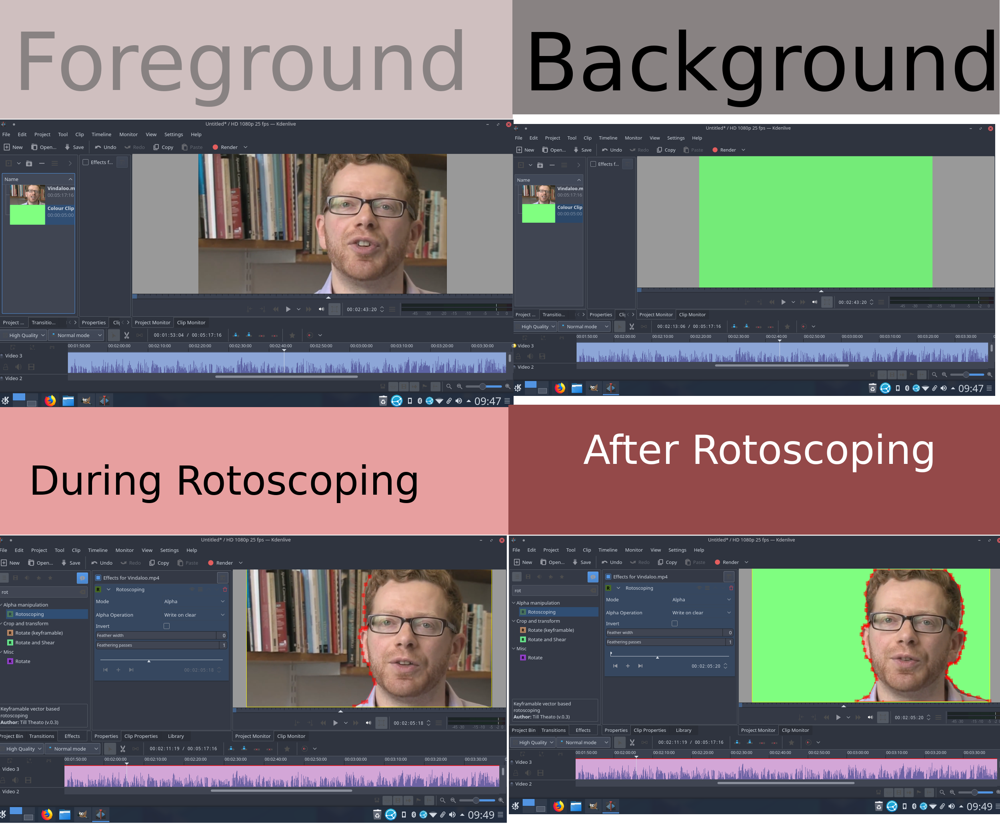
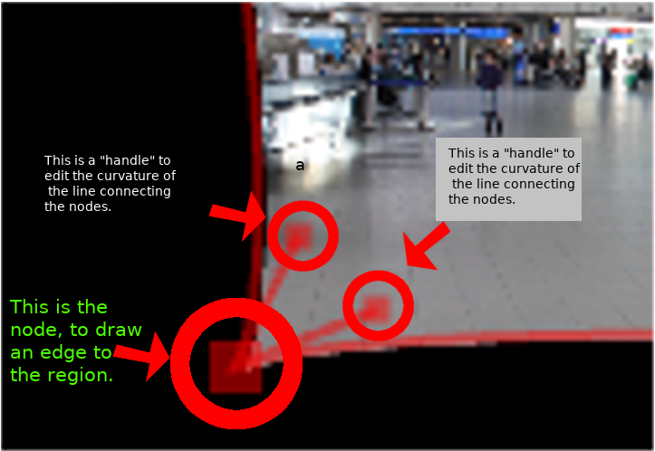
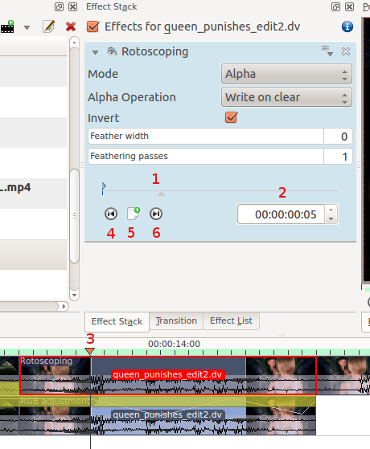
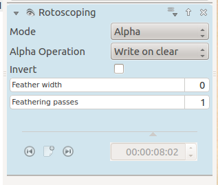

Rotoscoping¶
Contents
What is Rotoscoping?¶
“In the visual effects industry, the term rotoscoping refers to the technique of manually creating a matte for an element on a live-action plate so it may be composited over another background.” Wikipedia
Draw a region on one video track, and everything outside/inside that region will dissapear, showing the video track underneath.
How to draw the region in Kdenlive?¶
The region is drawn by adding nodes along your region. These act as edges for your rotoscope, and there is a line between each node. The line between each node can be made into a Bézier_curve using “handles”.
Add nodes to the node by left clicking the mouse.
Close the region by right clicking the mouse on one of the nodes.
Change the position of the region by moving a node.
Make a line curved by dragging the control “handles”. These are the two dots on the ends of the straight lines that appear on the curve (see screen shot above).
To define if it is the inside or the outside of the curve that is transparent toggle the invert checkbox.
In a previous version of kdenlive you could add a new nodes by clicking on the line between existing nodes. You could subtract nodes by right clicking on them. But it looks like you can not do this with the 17.04 & 18.04 version.
How to move the mask to follow the action - keyframes¶
To make the drawn mask follow the action in a clip…
Move the position in the clip by dragging the carat on the time line (1 or 3 in screenshot below) or by using the time code control in the rotoscope effect (2 in the screenshot)
Click add key frame (5 in the screen shot).
Now adjust the position of the nodes in the curve to match the action.
Kdenlive will calculate a path to move the nodes from the position they were in the previous key frame to the position you put them in at this keyframe. So you do not have to draw a curve for every frame in the clip.
To remove a key frame move to the frame with the key frame using the Go to previous keyframe (4) or Go to next keyframe (6) and then click the red X that the add key frame (5) becomes when you are on an existing keyframe.
This effect is based on the MLT FilterRotoscoping
Rotoscoping options greyed out¶
When you first add the rotoscope effect the keyframe options in it are greyed out. You can not even add a new keyframe.
Solution. Click in the project monitor and start drawing your rotoscope matte. Then the rotoscope keyframe options become enabled.
Examples¶
Examples of what you can do with the Rotoscoping effect.
see also Rotoscoping on ttill’s blog
Tutorial with Rotoscoping¶
This video is about green screen on Kdenlive but he does use rotoscoping in it too.